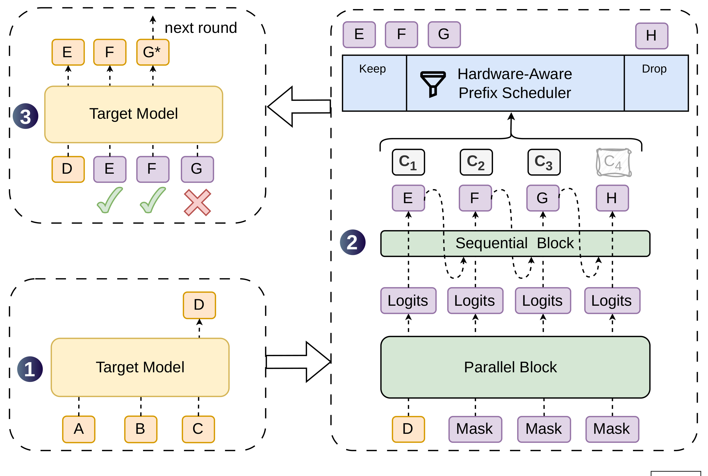
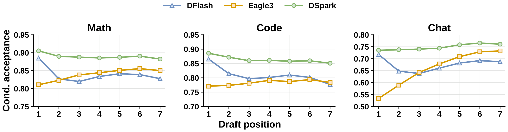
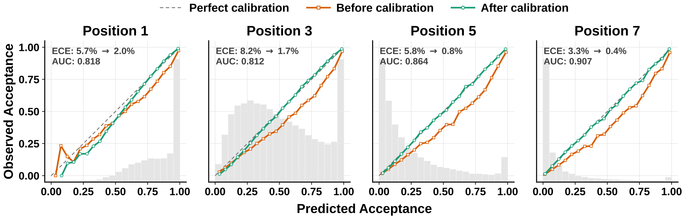
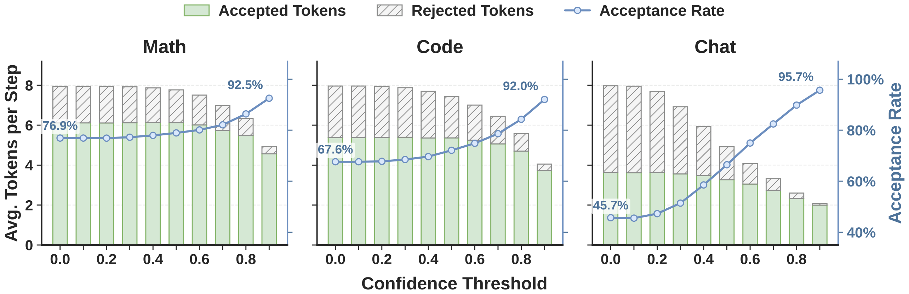
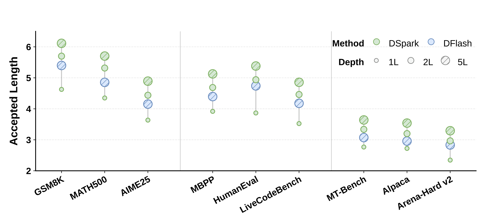
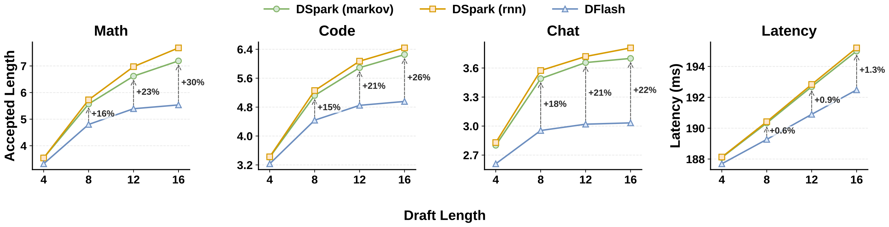
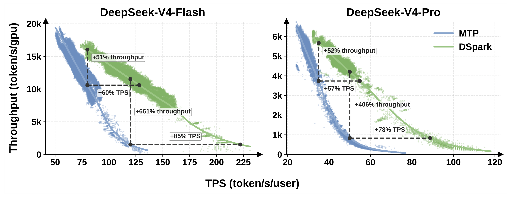
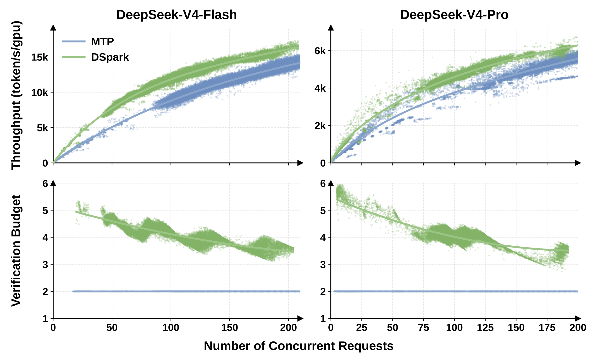

一边用并行起草「写得快」，一边用一个轻量序列头「写得准」，再用一个懂硬件负载的调度器决定「该验证多长」——把更长的草稿块真正变成生产环境里的加速。
投机解码的速度由公式 L = (T_draft + T_verify) / τ 决定：要么起草更快、要么起草更准（接受更多 token τ）、要么验证更聪明。并行起草器（如 DFlash）一次前向写完整块、起草极快，但各位置相互独立、缺乏依赖，导致后缀接受率快速衰减；而且不加区分地验证长草稿，会在高并发下挤占宝贵的批处理容量。DSpark 用两招同时解决：
① 半自回归——重并行骨干 + 轻量序列头注入块内依赖，几乎不增加延迟就遏制后缀衰减；
② 置信度调度验证——置信度头估计每个 token 的「存活概率」，硬件感知调度器按实时负载动态决定每个请求验证多长。线下接受长度大幅领先 SOTA，线上接入 DeepSeek-V4 后在同等吞吐下每用户生成速度提升 60%–85%，把服务系统的帕累托前沿整体外推。
大语言模型是自回归生成的：每写一个 token 都要带着前面所有 token 跑一次完整前向，于是推理延迟正比于输出长度，GPU 利用率低、用户等待久——这是生产环境（尤其是实时对话、多轮 agent）最主要的瓶颈。
投机解码（Speculative Decoding）给出了一个无损的加速思路：让一个轻量草稿模型一次提出一整块候选 token，再让完整的目标模型用一次前向并行验证整块，通过拒绝采样接受「与目标分布一致的最长前缀」，并附带生成一个 bonus token。因为验证是并行的、且接受规则严格保持目标分布，所以加速不损失任何生成质量。
这条公式把所有改进压缩成三个杠杆：降低 T_draft（起草更快）、提高 τ（起草更准）、或降低有效的 T_verify（验证更聪明）。草稿模型的架构，决定了前两个杠杆之间怎么取舍。
现有草稿器分成两大流派。它们正好落在「快」与「准」的两端，理解它们的取舍，才能看懂 DSpark 为什么要把两者缝起来。点开下面两张卡片看它们各自怎么做、卡在哪。
它要解决什么：让草稿尽可能贴近目标分布，从而每轮多接受几个 token。
怎么做：沿用语言模型的自回归方式逐位置采样，第 k 个 token 显式条件于前面已经采样出来的 token。Eagle3 进一步用 Training-Time Test（TTT）方式训练，把 TTT 视野（7）对齐到块大小。这种显式依赖带来很强的建模能力。
卡在哪：起草成本随块长线性增长，T_draft ∝ γ。要把 T_draft 压低，就只能用很小的块和很浅的网络。为弥补块短，常配合树状验证（tree attention）扩展候选，但大量验证 token 又会拖累整体服务吞吐。
它要解决什么：砍掉「逐 token」这个串行瓶颈，让起草延迟与块长解耦，从而负担得起更深的网络和更长的块。
怎么做（DSpark 的并行骨干就用它）：DFlash 用「块扩散 / block-diffusion」思路，输入一个锚点 token + γ 个 mask token，一次前向就为所有 mask 位置产出 logits。关键设计是 KV 注入（context injection）：在 prefill 阶段把目标模型若干层的隐状态拼接、投影到草稿空间得到 H_ctx，再把它沿序列维拼进每个草稿层的 K/V：
块内所有位置双向互相 attend，并都 attend 到注入的目标上下文；草稿模型复用目标模型（冻结的）embedding 与 LM head。因为起草只需一次前向（与块长无关），DFlash 能在同样的延迟预算下用更深的网络、更大的块。
卡在哪：各位置相互独立地预测，无法建模 token 间依赖。当上下文有多个合理续写（例如「of course」与「no problem」）时，并行器可能产出「of problem」「no course」这类多模态碰撞（multi-modal collision），导致后缀接受率快速衰减。此外，无差别验证整块草稿在高并发下会白白挤占目标模型的批处理容量。
DSpark 的出发点正是这张对比表的「合取」：要并行器在第 1 个 token 上的深网络容量优势，又要自回归在后缀上的依赖建模能力。下一节看它怎么做到。
DSpark 在并行骨干之上，叠加了两个互补组件：半自回归生成（让草稿写得更连贯）与置信度调度验证（让验证只花在「有正期望回报」的 token 上）。下图是论文的核心架构图，把一轮解码的全流程画在了一起。

一句话总结：D→并行写草稿→序列头修正并打分→调度器按负载裁长度→目标模型并行验证并修正，循环往复。
并行器的根本毛病是：一次前向产出所有 logits，每个预测都无法条件于块内别处采样到的 token。当上下文允许多个合理续写时（「of course」 vs 「no problem」），并行器对每个位置都在所有可能前驱上做边缘化，于是可能拼出「of problem」这种自相矛盾的组合，接受率沿块快速衰减。DSpark 把起草拆成两段：
用一个并行骨干（本文用 DFlash）一次前向跑完整块，产出隐状态 h₁…h_γ 与 base logits U₁…U_γ。这部分承担绝大多数计算，保证 T_draft 几乎与块长 γ 无关。（DSpark 做了一个小改动：把锚点本身当作第一个预测位置，γ 个输入 token 产出 γ 个草稿 logits，省一点计算又不掉质量。）
序列头给 base logits 叠加一个依赖前缀的转移偏置 B_k(x₀, x<k, x_k)，让每个草稿位置能条件于块内已采样的 token。注意：它不是定义一个全局归一化的能量模型，而是通过自回归因式分解诱导出一个因果块分布——这一点很关键，保证每个 token 的概率仍是精确的 softmax，能满足投机解码拒绝采样所需的精确概率。
序列循环天生是串行的，所以这个头必须极轻（T_sequential ≪ T_parallel），让总起草延迟仍由并行阶段主导。论文给了两种实现：
只依赖前一个 token，把转移退化为一阶 B(x_{k-1}, x_k)。原本是 V×V 大矩阵，用低秩分解 B = W₁W₂（r=256）近似：W₁ 当查表 embedding，W₂ 当 logit 投影，存储与单步计算都很小。
直觉：位置 1 采到「of」后，Markov 头在位置 2 抬高「course」、压低「problem」，跨模碰撞就被缓解了。
Markov 头只记一步；RNN 头维护一个递归状态 s_k，累积整个块内前缀历史，每步做一次门控更新。表达力更强。
取舍：实验中 RNN 头相对 Markov 头只在长块上有边际收益，但实现更复杂、部署性质更差，所以默认用 Markov 头。
当上下文同时允许「of course」和「no problem」两条路径时：
论文做了一个很有说服力的细粒度分析——位置级条件接受率：只统计「前面 1…k−1 都被接受」的样本，看第 k 个位置被接受的比例，从而剥离前缀错误的连带惩罚，露出每个位置的「真实预测质量」。

一句话总结：并行赢在第一枪、自回归赢在后续，DSpark 把两者都拿到了手。
半自回归让 DSpark 能高效产出大草稿块。但产出更多 token ≠ 端到端更快：无差别地验证整块，在高并发下反而拉低整体吞吐。原因有两层——数据侧：代码这类结构化文本接受率天然高，开放闲聊则低；系统侧：轻载时多验一个 token 几乎免费，重载时每一次无谓验证都在挤占本可服务其他请求的批处理容量。
所以需要一个统一机制，把目标模型的算力只投向有正期望回报的 token。DSpark 用「置信度头 + 硬件感知前缀调度器」实现。
置信度头对每个草稿位置输出一个标量 c_k ∈ (0,1)，表示「在前面都被接受的前提下，第 k 个 token 通过验证的条件概率」。结构极简：一层线性投影 + sigmoid。
调度器需要的是累积存活概率的绝对数值（用来算期望接受长度 τ），而不仅是排序。但神经网络的置信度常常过度自信，直接用会扭曲吞吐估计。论文提出 Sequential Temperature Scaling（STS）：因为每个 c_i 是条件概率，前缀被接受的联合概率按链式法则是累积乘积 ∏ c_i；STS 在留出验证集上从左到右逐位置做 1D 网格搜索，找到使累积乘积的期望校准误差（ECE）最小的温度标量。温度缩放是保序变换——只校正数值、不打乱排序。

一句话总结：判别力本来就够，STS 把「数值标定」补上，才能拿去算吞吐。
过去的方法多用静态阈值裁剪验证长度，单请求下有效，但在高并发生产系统里次优——验证一个 token 的「值不值」高度依赖当前负载。DSpark 把它建模成一个全局吞吐最大化问题：
关键洞察让组合搜索退化为贪心：因为 a_{r,j} 关于 j 单调不增，把请求 r 的验证长度从 j−1 延到 j 带来的边际期望接受恰好是 a_{r,j}。于是把全局所有候选 token 按存活概率降序排，沿这条「贪心准入路径」逐个加入、用 O(1) 查表更新 Θ 即可。
无损投机解码要求非预期性（non-anticipating）：准入决策不能依赖未来的候选 token。由于置信度头用了「前一个采样 token」的 Markov 特征，计算下一个存活概率 a_{r,k+1} 需要已经实例化的候选 x_{r,k}——若做回溯式全局搜索，就会把 x_{r,k} 泄漏进第 k 步的准入决策，引入选择偏差，破坏对目标分布的精确还原（论文附录 A 给了反例）。
早停如何修复：当吞吐一旦下降（Θ ≤ Θbest）立即 break，截断决策只依赖到该步为止的前缀，从而把准入事件与未来 token 隔离。代价是：这种逐步早停只有当 Θ 单峰时才取到全局最优，隐含假设硬件容量曲线平滑下降。

固定块大小为 7、把 DSpark 层数从 1 加到 5：性能单调上升，且从 1 层到 2 层的边际收益最陡。最惊人的是——2 层的 DSpark 就全面超过 5 层的 DFlash。也就是说，注入局部自回归，比单纯堆深并行层，在「精度 / 参数」上划算得多。

固定 5 层、把草稿长度扫到 {4,8,12,16}：DSpark 在每个块长都胜过 DFlash，且块越长差距越大（DFlash 的后缀衰减让它边际效用递减）。γ=7 时领先 16%/15%/18%（math/code/chat），γ=15 时扩大到 30%/26%/22%。而序列头带来的额外延迟仅 0.2%–1.3%——因为在 batch=128 下验证由目标模型主导，串行小循环可忽略。

一句话总结：用约 1% 的延迟，换最高约 30% 的接受长度。
把调度器搬上生产引擎要面对两个硬现实：真实硬件容量曲线 SPS(B) 是锯齿状离散的（不平滑），而动态变长的 token 数会与 CUDA Graph 重放、零开销调度（ZOS）冲突。DSpark 改成异步调度：用「两步之前」的置信度输出来预估即将到来的验证容量 K，把准入变成动态 top-K 选择。
正因为这层异步隔离，DSpark 得以去掉早停、放开全局搜索，避免被锯齿状容量曲线困在局部最优，同时不违反无损保证。
线下评测关掉调度器、所有草稿器都用定长块，单纯比草稿质量（每轮接受长度 τ）。DSpark 在所有目标模型、所有领域上都超过自回归 Eagle3 与并行 DFlash，并跨模型族（Qwen3、Gemma4）稳定成立。下表节选 Qwen3-4B 的代表性数字：
| Qwen3-4B · τ | GSM8K | MATH | MBPP | HumanEval | MT-Bench | Alpaca |
|---|---|---|---|---|---|---|
| Eagle3（自回归） | 5.14 | 4.62 | 3.69 | 4.16 | 2.39 | 2.26 |
| DFlash（并行） | 5.40 | 4.85 | 4.40 | 4.74 | 3.07 | 2.96 |
| DSpark | 6.11 | 5.70 | 5.13 | 5.38 | 3.64 | 3.54 |
宏平均上，DSpark 相对 Eagle3 提升 30.9%/26.7%/30.0%（4B/8B/14B），相对 DFlash 提升 16.3%/18.4%/18.3%。表中也能看到强烈的领域效应：结构化任务（math/code）接受长度天然高于开放闲聊（chat）——这正是「定长验证浪费算力、需要动态调度」的动机。
把 DSpark-5（最大草稿长度 γ=5）接入 DeepSeek-V4-Flash / Pro 的生产引擎，对比旧生产基线 MTP-1（单 token）。注意：历史上之所以一直用 MTP-1，正是因为静态多 token 草稿（MTP-3/5）在高并发下会因过度验证而拉低聚合吞吐——所以这个对比直接说明 DSpark 能安全地释放大草稿块的潜力。

一句话总结：不是单点提速，而是把整条「吞吐 × 交互性」前沿往外推。

一句话总结：闲时多验、忙时少验——同一套机制自动完成。